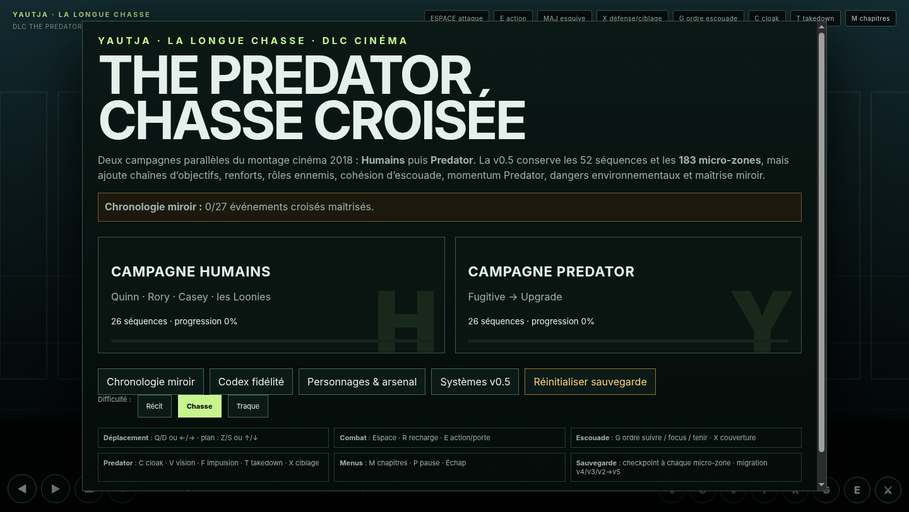
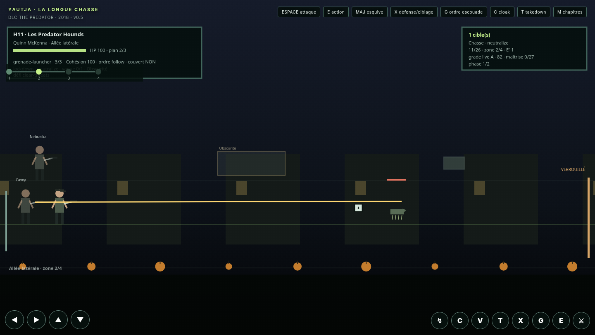
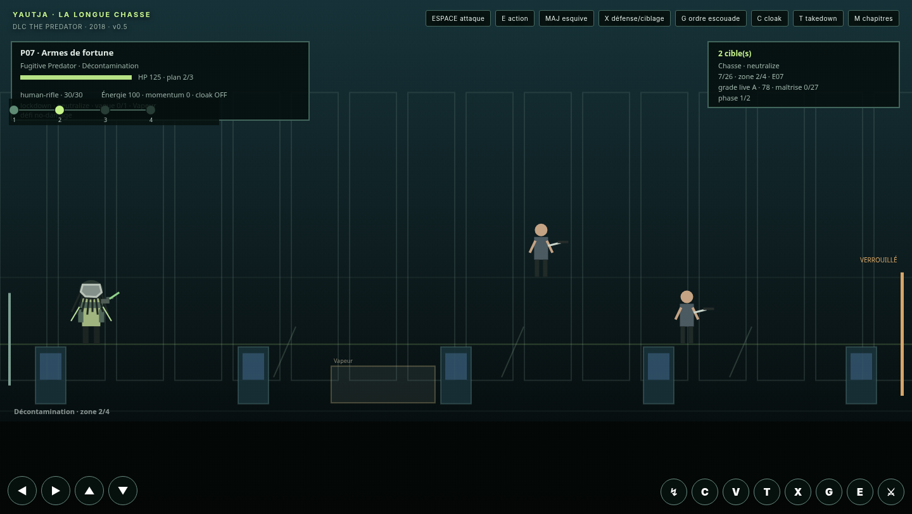
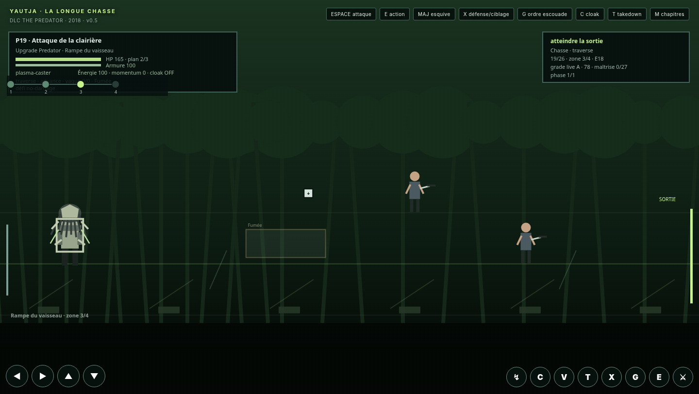
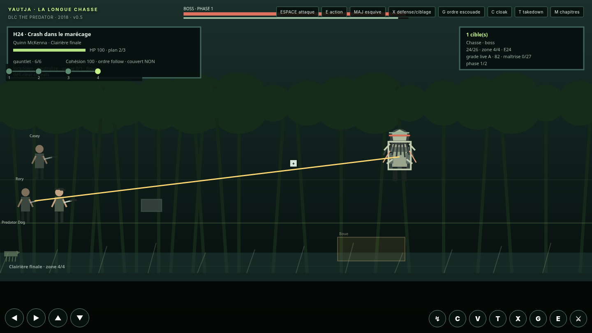
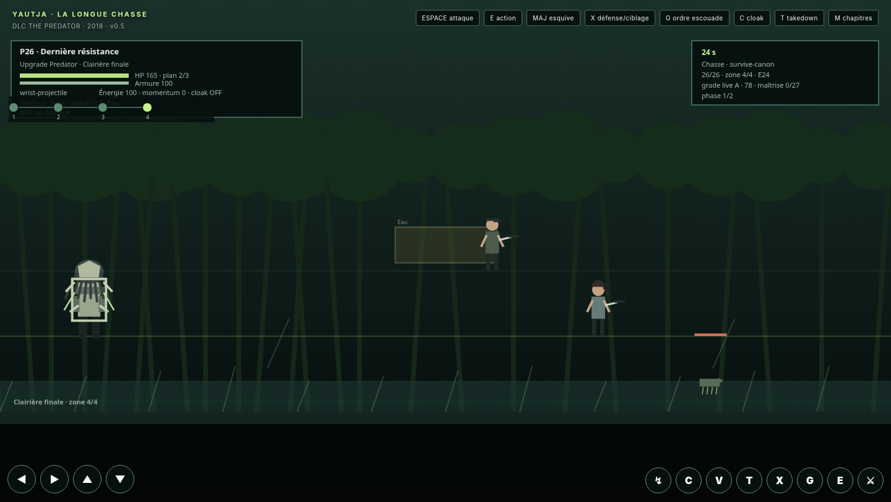
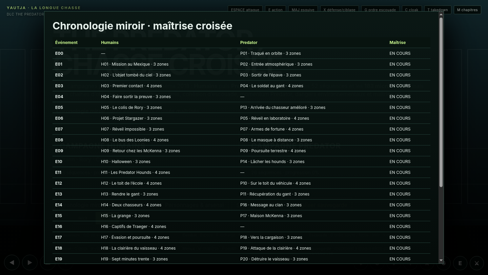
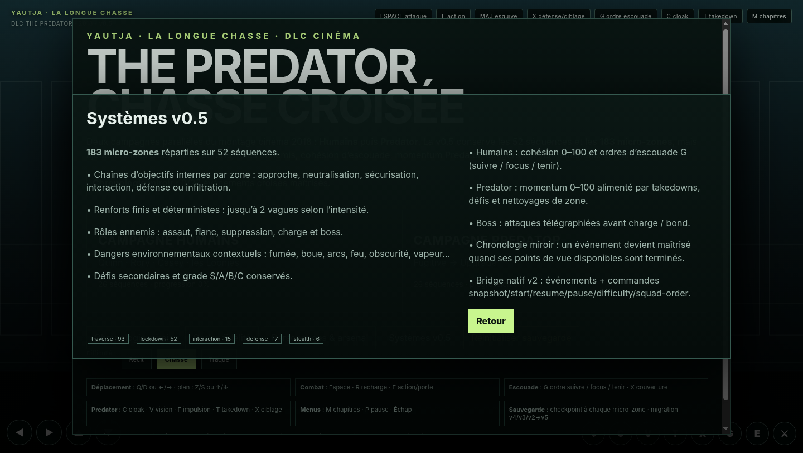

THE PREDATOR — CHASSE CROISÉE · Rapport visuel & QA v0.5
Candidate 0.5.0-candidate.1. Captures issues du runtime v0.5 exécuté dans Chromium. Les visuels sont originaux/provisoires.
Node
146 / 146
146 / 146
Scènes Chromium
52 / 52
52 / 52
Interactions
14 / 14
14 / 14
Runtime errors
0
0
Micro-zones
183
183
Événements miroir
27
27
Contrôles interactifs
- predator-controls — OK
- human-controls — OK
- room-transition-checkpoint-host-event — OK
- storage-blocked-fallback — OK
- v04-save-migration — OK
- human-cover-mitigation — OK
- upgrade-organic-armor — OK
- performance-grade-and-host-event — OK
- squad-order-and-cohesion — OK
- predator-momentum-takedown — OK
- finite-reinforcement-wave — OK
- host-command-snapshot-v2 — OK
- boss-telegraph — OK
- mirror-event-mastery — OK
Répartition tactique
traverse: 93, lockdown: 52, interaction: 15, defense: 17, stealth: 6. Vagues : 0=108, 1=58, 2=17. 19 dangers utilisés.
Captures








Limites qualifiées
Le bridge hôte v2 est validé, mais le DLC ne déclare toujours ni fusion HuntCanvas ni utilisation des cinq slots principaux. Les sprites restent procéduraux/provisoires. Le contenu supprimé du film reste séparé de la campagne principale.